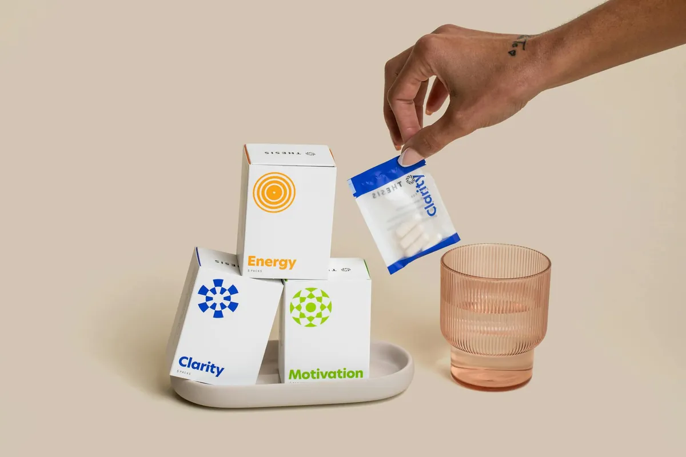

Unlock Your Body's Power: The Nutrient That Supercharges Cellular Energy

Key takeaways
- I remember one particularly rough Monday morning.
- My alarm shrieked, and I felt like I'd wrestled a bear all night.
- Track what feels sustainable and adjust gradually.
I remember one particularly rough Monday morning. My alarm shrieked, and I felt like I'd wrestled a bear all night. Coffee barely touched the sides. I'd always figured this was just part of being an adult, you know? That constant, low-grade fatigue. But what if I told you there's a way to genuinely unlock your body's power, a nutrient that supercharges cellular energy and makes you feel… well, *alive*? Forget the jitters of energy drinks; this is about tapping into your own internal power plant for sustained, vibrant energy.
For years, I’ve been chasing that elusive feeling of consistent energy. I tried every supplement, every diet fad, and even experimented with extreme sleep schedules. Most left me feeling disappointed, or worse, reliant on quick fixes that inevitably led to crashes. It wasn't until I stumbled upon the research surrounding a specific compound that things started to click. This isn't just about feeling less tired; it's about fundamentally changing how your cells produce energy.
The star of the show is something called NAD+ (Nicotinamide Adenine Dinucleotide). You probably haven't heard of it, and honestly, I hadn't either until recently. It's a coenzyme found in every single cell of your body. Think of it as the spark plug for your mitochondria, your cells' tiny powerhouses. Without enough NAD+, these powerhouses can't efficiently convert the food you eat into the energy you need to function. It's crucial for everything from muscle contraction to brain function and DNA repair.
The kicker? Our NAD+ levels naturally decline as we age. Stress, poor diet, lack of sleep – they all contribute to this depletion. This is why that afternoon slump hits harder, why recovery from exercise feels slower, and why we just don't have the same get-up-and-go as we did in our younger years. It’s a biological reality, but one that science is now offering ways to combat.
So, how do we boost our NAD+ levels? The most direct way is through precursors – molecules your body uses to build NAD+. One of the most well-researched is NMN (Nicotinamide Mononucleotide). While research is ongoing, studies suggest that supplementing with NMN can help replenish NAD+ levels, especially in older adults. I’ve found incorporating it into my daily routine has made a noticeable difference in my overall stamina. It’s like giving my cells the building blocks they need to run at full capacity.
Another key precursor is NR (Nicotinamide Riboside). Both NMN and NR are gaining traction in the wellness community for their potential to support cellular energy production. It’s fascinating to see how these compounds can help us reclaim some of that youthful vitality. For me, it’s been about more than just energy; I’ve noticed improvements in my mental clarity too. It’s a comprehensive boost that feels natural and sustainable.
Beyond supplements, lifestyle plays a huge role. Certain foods contain compounds that can support NAD+ production or help conserve existing NAD+. Think cruciferous vegetables like broccoli and cauliflower, and even avocados. They contain precursors like nicotinamide, which your body can use. I make sure to include these in my meals regularly, viewing them as part of a holistic approach to energy. It’s about making smart food choices that fuel your cells from the inside out. For more on nutrient-dense foods, check out this related healthy tip.
Exercise is another powerful NAD+ booster. When you exercise, your muscles signal for more energy, which in turn stimulates NAD+ production. It’s a beautiful feedback loop. Even moderate activity can make a difference. I’ve found that sticking to a consistent workout routine, even when I don’t feel like it, pays dividends in my energy levels throughout the week. It’s a prime example of how our bodies are designed to thrive on movement. For practical guidance, explore this another practical guide.
Intermittent fasting has also shown promise in studies for its ability to increase NAD+ levels. When you fast, your cells initiate repair processes, and this requires NAD+. It’s a way to give your system a reset and encourage cellular rejuvenation. I’ve experimented with different fasting windows, and I’ve noticed it helps me feel more alert and less prone to energy dips. This is a similar wellness insight that has been transformative for me.
Pro-Tip: While NMN and NR are popular, don't underestimate the power of simple lifestyle changes. Consistently getting enough quality sleep and managing stress are fundamental for maintaining healthy NAD+ levels. Your body is incredibly resilient when given the right conditions.
It’s easy to feel overwhelmed by all the information out there, but focusing on these key areas can make a real difference. The goal isn't perfection; it's progress. Finding what works for you and sticking with it is the real win. Consistency is key to unlocking your body's power and supercharging cellular energy. For advice on how to stay consistent, read this stay consistent with this.
The 2-Minute Win
Take a deep breath. Seriously. Right now. Inhale for 4 seconds, hold for 4, exhale for 6. Repeat 3 times. This simple act can reduce stress, which in turn helps conserve your precious NAD+ stores. It’s a tiny win that supports your cellular energy!
Ultimately, understanding how our bodies work at a cellular level empowers us to make better choices. It’s not about chasing fleeting energy boosts, but about building a foundation of true vitality. By supporting our NAD+ levels, we are investing in our long-term health, energy, and well-being. Ready to explore more? explore more anti-inflammatory guides.
Disclosure: This page may contain affiliate links.
Educational only — not medical advice.
Recommended Reading
- Mental Fatigue? Try These Quick Burnout Fixes
- Unlock Better Sleep: Natural Tips for Deeper Rest & Energy
- Biohacking for Beginners: Unlock Your Best Health & Energy Naturally
More in health
Mindful Eating: Boost Gut Health & Digestion Naturally
Discover how Mindful Eating can boost gut health & digestion naturally. Learn practical tips to reduce bloating, improve
Read article →Vitamin D and Pain: The Surprising Connection You Need to Know
Discover the surprising connection between Vitamin D and pain. Learn how low vitamin D levels can contribute to chronic
Read article →